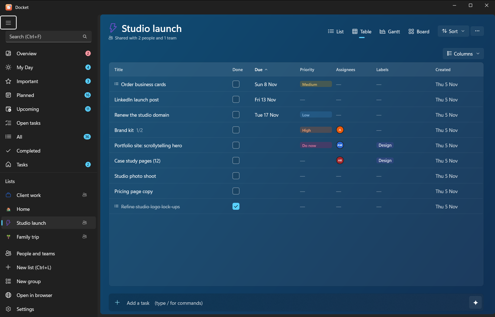
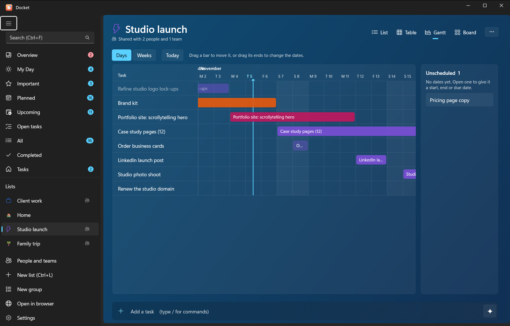
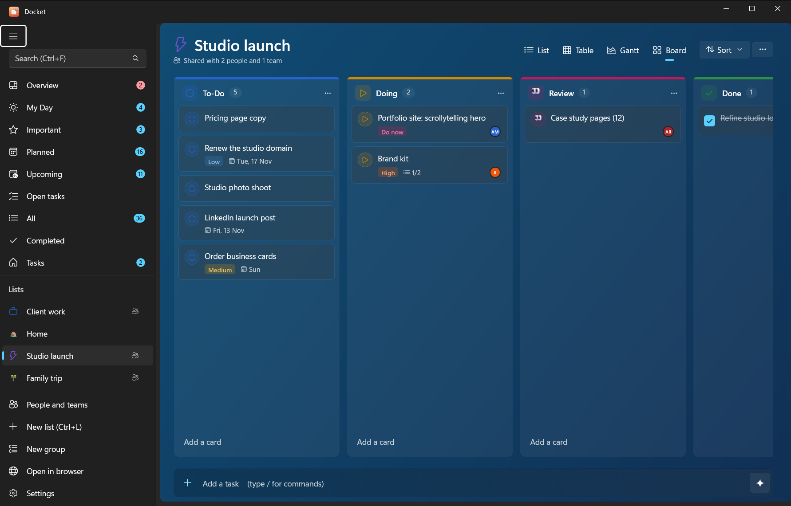
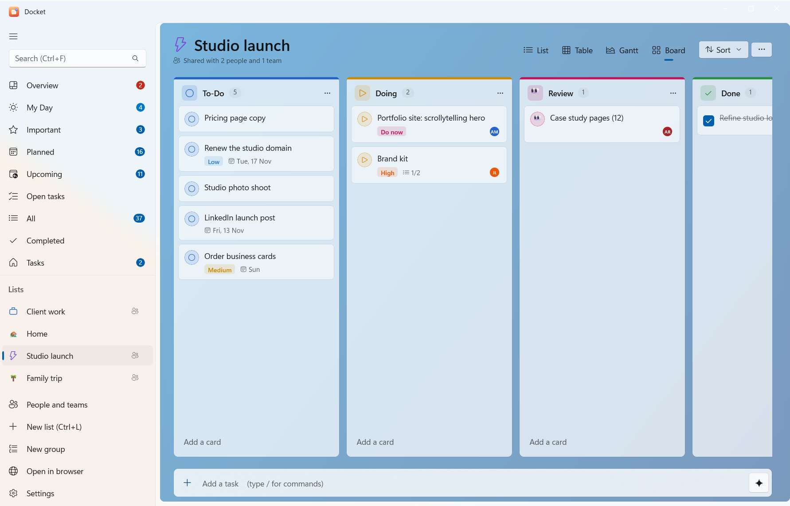
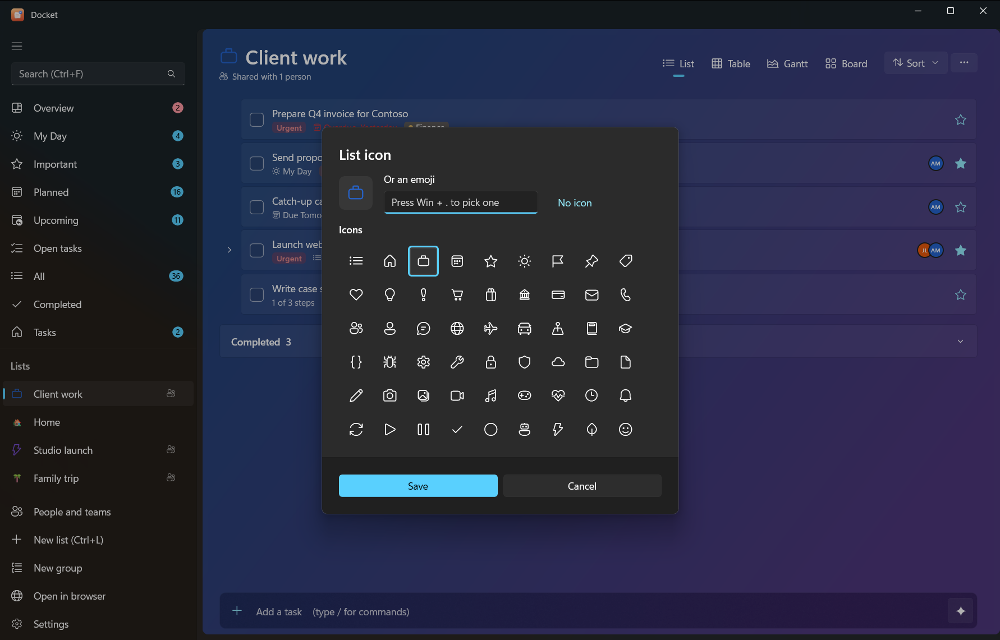
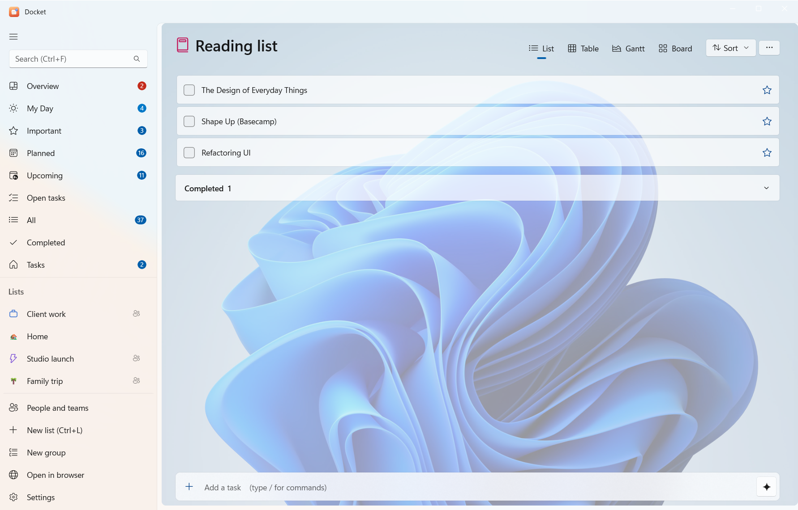

Use Docket
Views, boards and list styles
Every list can be shown four ways, and each list can have its own icon and background.
#Four views of every list
Switch with the view buttons at the top of a list. Each list remembers its view.
| View | Good for |
|---|---|
| List | The everyday To Do view, with subtasks nested under their parents |
| Table | Many tasks at once, with columns for dates, priority and more |
| Gantt | Seeing work over time, using start and end dates (called Timeline on Android) |
| Board | Moving work through stages, Kanban style |


#Boards
Every list has a board with To-Do, Doing and Done columns to start with.
- Add column at the end of the board makes a new one; add as many as you like.
- Each column's menu lets you rename it, pick a colour and an icon (a Fluent glyph or an emoji), or delete it.
- To-Do and Done always stay (you can rename them). Moving a card into Done completes the task.
- Add a card at the bottom of a column adds a task straight into it. Drag cards between columns.


From the command line: docket board work shows a board and docket move 12 doing moves a task. An AI can use
get_board and move_task.
#List icons and backgrounds
Open List options (the … at the top of a list):
- Icon… sets the list's icon: a Fluent glyph or any emoji. It shows in the sidebar and the list's title.
- Background… gives the list a backdrop: a colour, a gradient (with an angle), the accent colour, or an image from your PC.
- Colour sets the list's colour in the sidebar.


#Sorting and filtering
At the top of a list: Sort by my order, importance, due date, priority, alphabetically or creation date; show or hide completed tasks; search within the list; and Copy list to paste it as text anywhere.
#Overview and Upcoming
- Overview is a dashboard of all your lists: how many tasks are open, due today and overdue, the last 14 days,
tasks by priority, what's assigned to you and progress per list.
docket overviewand the AI tooloverviewgive the same numbers. - Upcoming shows what's due in the coming days, day by day.
- Open tasks shows everything unfinished across all lists.